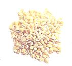
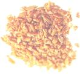
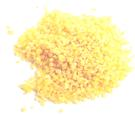
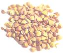
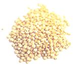
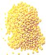
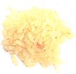
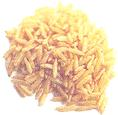
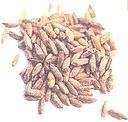
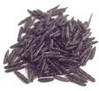

Grain Glossary
Whole grains are among nature's most complete health foods. While most of us are comfortable with wheat, corn and oats, we may be less sure about strange grains such as quinoa. Here is a list of some grains that, if not already familiar, you'll want to get to know.
By the Mother Earth News editors
February/March 2000
Storing Grains Whole grains contain perishable natural oils so it's a good idea to buy them in small amounts. Store your grains in jars or airtight containers in a cool, dark place for about a month. They'll keep at least four months in the refrigerator, but I find that I usually don't have the room so I buy packaged grains or small amounts in the store's bulk section. If you buy grains in bulk, purchase them from a busy store where there's a good turnover and where the bins are emptied before new stock is added.
Whole grains are among nature's most complete health foods. While most of us are comfortable with wheat, corn and oats, we may be less sure about strange grains such as quinoa. Here are some grains that, if not already familiar, you'll want to get to know.
Barley: Most of the time we're buying refined pearled barley, which is the inner part of the grain containing significant protein, some fiber and B vitamins. Hulled barley is more nutritious, but takes longer to cook. This dense grain requires more cooking water than other grains.
Bulgar: Bulgur is made from crushed wheat berries that are steamed whole, then dried and cracked into grits. It is not the same as cracked wheat, which is uncooked wheat. Finely ground bulgur is used to make the Middle Eastern tabbouleh salad. Pour boiling water over the bulgur and it's ready in minutes.
Couscous:Although we treat it as a grain, couscous is really a baby pasta made of semolina from durum wheat flour, which is used to make most pastas. White or whole wheat couscous is available in different-size granules. I prefer whole wheat because it's more nutritious and just as delicious. Couscous is ready in minutes by soaking it in boiling water and then fluffing it up with a fork.
Kasha (buckwheat groats): Since buckwheat is botanically a fruit and not a wheat product, it's a good alternative for those who are wheat sensitive. It contains the amino acid lysine, which isn't usually found in grains. It can be bought unroasted or roasted, which turns the buckwheat a darker brown. I prefer the roasted for flavor and a faster cooking time. It can be used in Middle Eastern lamb kibbe or thrown into soups or stews. It can be stored longer than other grains.
Millet: Millet is more than just bird food, it's a delicate tasting, high quality protein that is tolerated well by people with grain allergies.The small grain cooks uickly, making a great cereal or pilaf.
Quinoa (pronounced "keen-wah"): This nutritious, quick cooking grain dates back to the ancient Inca empire and has recently been rediscovered as the new "supergrain."
It has more protein than any other grain, containing all eight of the essential amino acids, including lysine, which is seldom found in grains. This makes it a great food for vegetar ians. The plant has a natural coating that acts as an insect repellent so rinse under cold water to remove any bitterness before cooking. Quinoa's unstarchy texture works well for salads and pilafs.
RICE: Besides long-grain, there's medium- and short-grain rice, which has a shorter, fatter kernel. The shorter grains stick together when cooked, which is why they are used to make sushi. Some different varieties of rice are:
Brown Rice: Brown rice, which has been hulled but still has most of the rice bran and rice germ intact, is high in B vitamins and fiber. It's a bit chewier than white rice and takes longer to cook.
White Rice: By removing the rice kernel's hull, bran and germ, white rice loses most of its vita mins and fiber. If you must have white rice, choose "converted" (which Uncle Ben made famous, since the "converted" process of steaming rice before milling forces about 70% of the bran's and germ's nutrients back into the grain.
Basmati Rice: A long-grain aromatic variety grown in Iran, India and Pakistan. Itsmells like popcorn when it's cooking and is more flavorful than plain rice.
Wehani Rice: This aromatic long-grain rice is a rich darkbrown color and is grown exclusively by Lundberg Family Farms, who specialize in quality, organically grown rice products.
Wheat berries: Wheat berries are the unprocessed wheat kernels that are processed into flour. They are sold as either hard or soft wheat berries. Hard wheat berries contain higher levels of protein, while soft wheat berries - have more carbohydrates. For less chewy berries, soak them in water overnight or for a couple of hours before cooking.
Wild Rice: Wild rice isn't really a rice, but ratherthe seed of a grass found in the northern Great Lakes region. Because it has to be arvested by hand, wild rice is the only costly grain.
|
 Barley: Most of the time we're buying refined pearled barley, which is the inner part of the grain containing significant protein, some fiber and B vitamins. Hulled barley is more nutritious, but takes longer to cook. This dense grain requires more cooking water than other grains. |
 Bulgar: Bulgur is made from crushed wheat berries that are steamed whole, then dried and cracked into grits. It is not the same as cracked wheat, which is uncooked wheat. Finely ground bulgur is used to make the Middle Eastern tabbouleh salad. Pour boiling water over the bulgur and it's ready in minutes. |
 Couscous:Although we treat it as a grain, couscous is really a baby pasta made of semolina from durum wheat flour, which is used to make most pastas. White or whole wheat couscous is available in different-size granules. I prefer whole wheat because it's more nutritious and just as delicious. Couscous is ready in minutes by soaking it in boiling water and then fluffing it up with a fork. |
|
 Kasha (buckwheat groats): Since buckwheat is botanically a fruit and not a wheat product, it's a good alternative for those who are wheat sensitive. It contains the amino acid lysine, which isn't usually found in grains. It can be bought unroasted or roasted, which turns the buckwheat a darker brown. I prefer the roasted for flavor and a faster cooking time. It can be used in Middle Eastern lamb kibbe or thrown into soups or stews. It can be stored longer than other grains. |
 Millet: Millet is more than just bird food, it's a delicate tasting, high quality protein that is tolerated well by people with grain allergies.The small grain cooks uickly, making a great cereal or pilaf. |
 Quinoa (pronounced "keen-wah"): This nutritious, quick cooking grain dates back to the ancient Inca empire and has recently been rediscovered as the new "supergrain." It has more protein than any other grain, containing all eight of the essential amino acids, including lysine, which is seldom found in grains. This makes it a great food for vegetar ians. The plant has a natural coating that acts as an insect repellent so rinse under cold water to remove any bitterness before cooking. Quinoa's unstarchy texture works well for salads and pilafs. |
 Brown Rice: Brown rice, which has been hulled but still has most of the rice bran and rice germ intact, is high in B vitamins and fiber. It's a bit chewier than white rice and takes longer to cook. |
 White Rice: By removing the rice kernel's hull, bran and germ, white rice loses most of its vita mins and fiber. If you must have white rice, choose "converted" (which Uncle Ben made famous, since the "converted" process of steaming rice before milling forces about 70% of the bran's and germ's nutrients back into the grain. |
 Basmati Rice: A long-grain aromatic variety grown in Iran, India and Pakistan. Itsmells like popcorn when it's cooking and is more flavorful than plain rice. |
|
 Wheat berries: Wheat berries are theunprocessed wheat kernels that are processed ty~`. into flour. They are sold as either hard or soft ~"ty~ wheat berries. Hard wheat berries contain higher levels of protein, while soft wheat berries - have more carbohydrates. For less chewy '< berries, soak them in water overnight or for a couple of hours before cooking. |
 Wild Rice: Wild rice isn't really a rice, but ratherthe seed of a grass found in the northern Great Lakes region. Because it has to be arvested by hand, wild rice is the only costly grain. |
|